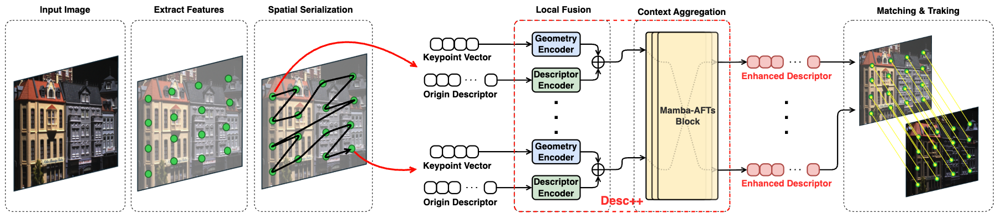
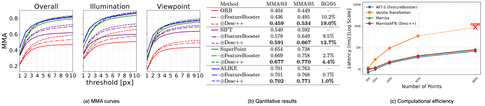

Desc++ Enhanced ORB Comparison
Abstract
Reliable visual data association is fundamental to visual SLAM (V-SLAM), as it directly determines the quality of the camera pose estimation and map consistency. However, the handcrafted descriptors used by most mature real-time systems degrade under illumination and viewpoint changes, while learning-based front-ends that address this weakness typically require replacing the extraction-and-matching pipeline and introduce substantial computational overhead. Descriptor enhancement offers a compromise by refining existing descriptors within their original format, although current methods rely on simplified attention mechanisms whose limited contextual modeling constrains the achievable matching quality. To resolve this trade-off between contextual expressiveness and efficiency, we propose Desc++, a lightweight enhancement module that jointly encodes descriptor representations and keypoint geometry and aggregates spatial context through a hybrid architecture that combines order-agnostic global attention with geometry-aware sequential modeling in linear time. The enhanced descriptors retain their original dimensionality and matching interface, enabling integration into deployed V-SLAM systems without modifying the pipeline. Experiments across descriptor matching, correspondence analysis, and system-level benchmarks with four different V-SLAM systems demonstrate that Desc++ improves matching accuracy over the state-of-the-art enhancement method, translates these gains into more accurate and stable trajectory estimation, and achieves a favorable balance between accuracy and efficiency for practical integration into existing real-time V-SLAM pipelines.
Plug-and-Play Integration
Desc++ sits between the existing feature extractor and the matcher. It takes the original descriptors together with keypoint geometry and outputs refined descriptors in exactly the same format, so the downstream matching, tracking, and mapping modules of the host V-SLAM system run as-is.
Desc++ Overview

Model Performance
